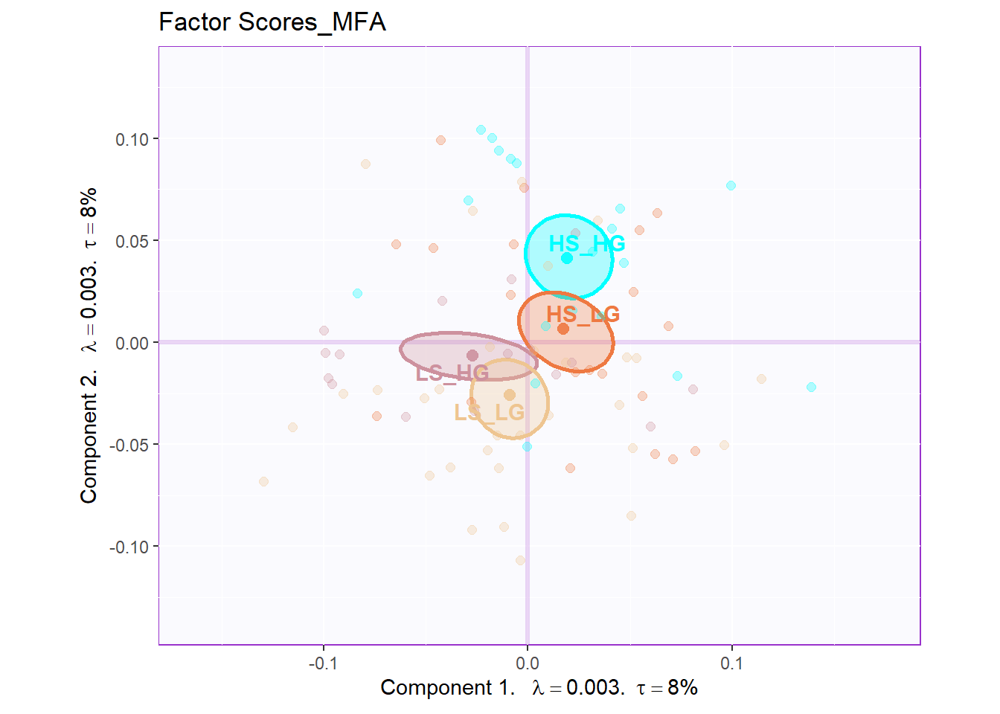
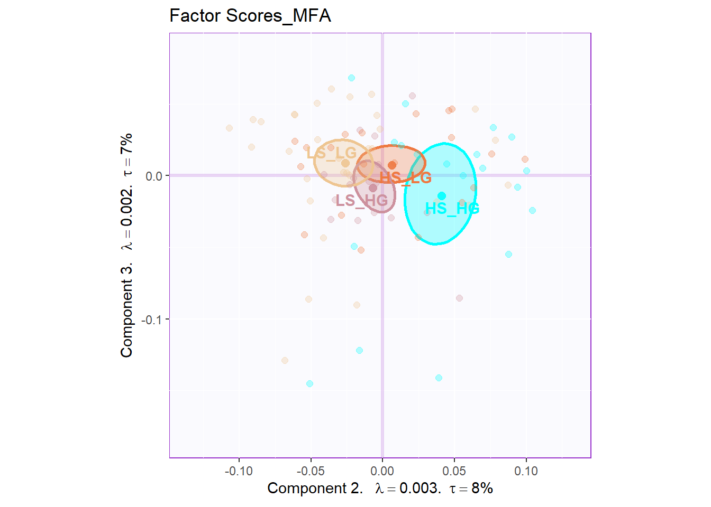
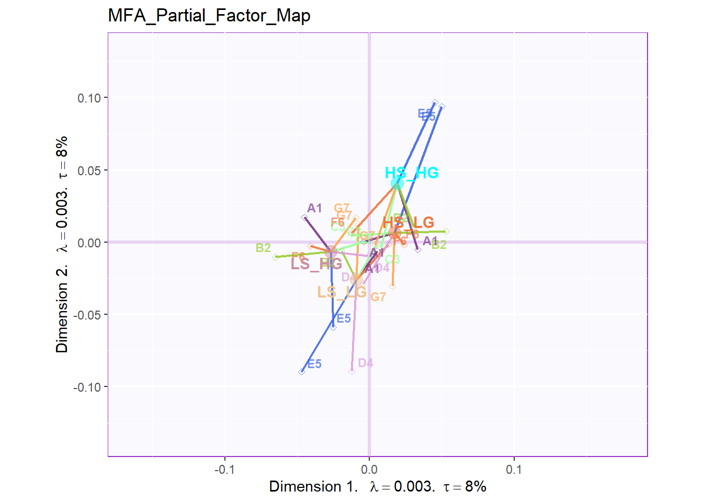
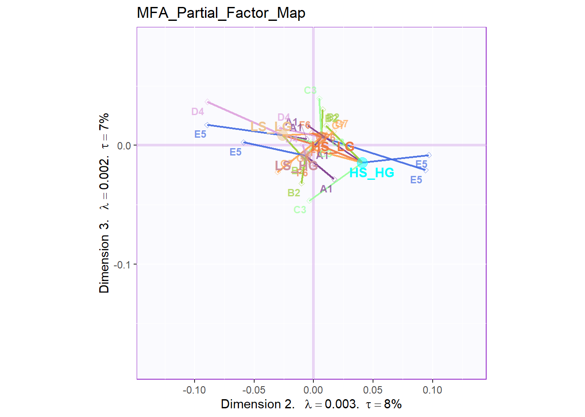
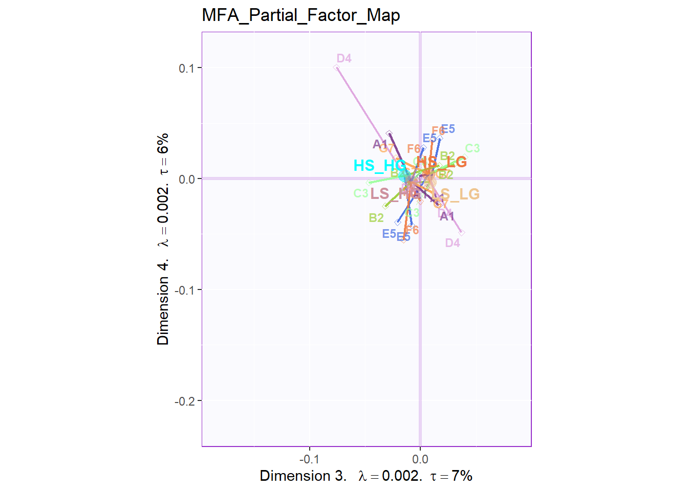
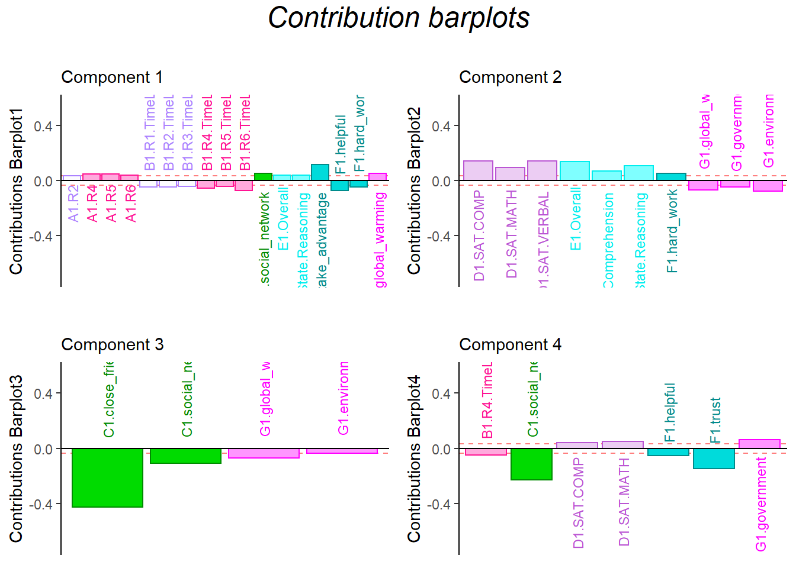

Chapter 11 Multiple Factor Analysis
11.1 Introduction of MFA
The Multiple Factor Analysis (MFA) is another external version of the PCA, aka PCA for multiple data set. The principle of the MFA is to do the two steps: * 1. do the PCA and normalize each data table by the first singular value (alpha); * 2. all these normalized data will be compiled into a new grand table for analysis. The advantage of the MFA is that the size of the data table will not take up larger variance in grand data table (it has been normalized). Besides, MFA can provide more details about how each sub data tables contribute/associate with my observation. Compared to other MSA method, MFA has more flexibility on data tables, which is suitable for exploration study. In this chapter, I will use 7 sub data table to conduct the MFA to investigate the realtionship between collective behaviors and social & general intelligence in college students.
11.2 Computation
It’s worth to mention that the seven sub data tables’ names are listed in the data intro part for your quick reference3.1.
# import data
raw.mfa <- exp.neg[7:35]
raw.col.design <- as.matrix(raw.mfa[1,])
raw.col.design[1:6] <- "A1"
raw.col.design[7:12] <- "B1"
raw.col.design[13:14] <- "C1"
raw.col.design[15:17] <- "D1"
raw.col.design[18:21] <- "E1"
raw.col.design[22:26] <- "F1"
raw.col.design[27:29] <- "G1"
colnames(raw.mfa) <- paste0(raw.col.design[1:29],".",
colnames(raw.mfa)[1:29])
res.MFA <- mpMFA(raw.mfa,
column.design = raw.col.design,
DESIGN = exp.neg$group, graphs = FALSE)[1] "Preprocessed the Rows of the data matrix using: None"
[1] "Preprocessed the Columns of the data matrix using: Center_1Norm"
[1] "Preprocessed the Tables of the data matrix using: MFA_Normalization"
[1] "Preprocessing Completed"
[1] "Optimizing using: None"
[1] "Processing Complete"rv.mfa <- res.MFA$mexPosition.Data$InnerProduct$RVMatrix
eigs <- res.MFA$mexPosition.Data$Table$eigs
fs <- res.MFA$mexPosition.Data$Table$fi
fj <- res.MFA$mexPosition.Data$Table$Q
cj <- res.MFA$mexPosition.Data$Table$cj
partial.fi.array <- res.MFA$mexPosition.Data$Table$partial.fi.array
tau <- res.MFA$mexPosition.Data$Table$t11.3 Heatmap
The RV heatmap will tell me the covariance among these seven data tables. From the heatmap, it is obvious that there are some sub tables have high covariance between each other, friends with token, SAT with friends.
11.4 Scree Plot
11.5 Global Factor Scores
The plot of global factor scores has shown similar results with PCA before. The only difference is that the dimension 3 looks more meaningful than PCA.


11.6 Partial Factor Scores
From the Partial Factor Scores, the most significant sub data table is D4 and E5, which represent Social Intelligence, empathy and General Intelligence, SAT. Also, A1, the collective game performance contributes much to the separation too. Compared to other results, since all the four groups are clustering at the center so it is hard to tell the specific difference. However, what I know is that most of these sub data tables will have different direction on HIGH_HIGH group and LOW_LOW group.
plot.partial.fs(DESIGN = exp.neg$group,
fs = fs,
eigs = eigs,
tau = tau,
d=1,
partial.fi.array=partial.fi.array,
mm = 7)
plot.partial.fs(DESIGN = exp.neg$group,
fs = fs,
eigs = eigs,
tau = tau,
d=2,
partial.fi.array=partial.fi.array,
mm = 7)
plot.partial.fs(DESIGN = exp.neg$group,
fs = fs,
eigs = eigs,
tau = tau,
d=3,
partial.fi.array=partial.fi.array,
mm = 7)
11.7 Contribution Barplots
The results from contribution barplots are quite similar with before.
In dimension 1, the time usage is negatively associated with collective behavior, and helpful is in same line with time usage
In dimension 2, attitude is in opposite direction with empathy ability
In dimension 3, friends is positive related with attitude.
# Contribution Plot
### plot contributions for component 1
col <- m.color.design
signed.ctrJ <- cj * sign(fj)
laDim = 1
ctrJ.1 <- PrettyBarPlot2(signed.ctrJ[,laDim],
threshold = 1 / NROW(signed.ctrJ),
font.size = 3,
signifOnly = TRUE,
horizontal = TRUE,
color4bar = col, # we need hex code
main = 'Variable Contributions (Signed)',
ylab = paste0('Contributions Barplot', laDim),
ylim = c(1.2*min(signed.ctrJ), 1.2*max(signed.ctrJ))
) + ggtitle("",subtitle = paste0('Component ', laDim))
### plot contributions for component 2
laDim =2
ctrJ.2 <- PrettyBarPlot2(signed.ctrJ[,laDim],
threshold = 1 / NROW(signed.ctrJ),
font.size = 3,
color4bar = col, # we need hex code
signifOnly = TRUE,
horizontal = TRUE,
main = 'Variable Contributions (Signed)',
ylab = paste0('Contributions Barplot', laDim),
ylim = c(1.2*min(signed.ctrJ), 1.2*max(signed.ctrJ))
)+ ggtitle("",subtitle = paste0('Component ', laDim))
laDim =3
ctrJ.3 <- PrettyBarPlot2(signed.ctrJ[,laDim],
threshold = 1 / NROW(signed.ctrJ),
font.size = 3,
color4bar = col, # we need hex code
signifOnly = TRUE,
horizontal = TRUE,
main = 'Variable Contributions (Signed)',
ylab = paste0('Contributions Barplot', laDim),
ylim = c(1.2*min(signed.ctrJ), 1.2*max(signed.ctrJ))
)+ ggtitle("",subtitle = paste0('Component ', laDim))
laDim =4
ctrJ.4 <- PrettyBarPlot2(signed.ctrJ[,laDim],
threshold = 1 / NROW(signed.ctrJ),
font.size = 3,
color4bar = col,
signifOnly = TRUE,
horizontal = TRUE,
main = 'Variable Contributions (Signed)',
ylab = paste0('Contributions Barplot', laDim),
ylim = c(1.2*min(signed.ctrJ), 1.2*max(signed.ctrJ))
)+ ggtitle("",subtitle = paste0('Component ', laDim))
gridExtra::grid.arrange(as.grob(ctrJ.1),
as.grob(ctrJ.2),
as.grob(ctrJ.3),
as.grob(ctrJ.4),
ncol=2, top = textGrob("Contribution barplots",
gp=gpar(fontsize=18,font=3)))